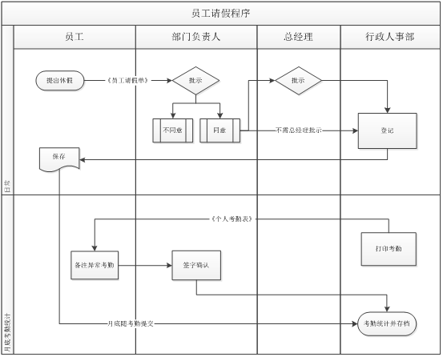

作息时间及考勤管理
为加强公司内部管理，保障员工合法权益，建立正常的工作秩序，结合本公司实际，特制定本制度。
上班时间为：10：00―18：30，吃饭及午休时间为1小时（视工作情况自行安排）。
考勤方式采用指纹考勤机打卡。
迟到：超过上班时间打卡即为迟到。迟到每超过1分钟减扣薪资2元，最高为50元。超过60分钟视为旷工半天。
早退：未到下班时间提前离开即为早退。早退一次减扣薪资50元。时间超过30分钟视为旷工半天。
旷工：在工作时间无任何理由未请假或未经相关负责人同意而缺席的即为旷工。被治安行政拘留的，拘留期间视同旷工。旷工一天扣除当月总收入10%。
员工外出应告知相关负责人并填写《外出登记表》，如未请假或填写请假或请假未经公司批准擅自离岗视为旷工；休假期满未请示或未经批准擅自续假视为旷工。
未打卡：上班或下班未打卡但经核实无迟到、早退、旷工情况的每次减扣薪资5元。
加班：因执行婚礼现场布置超过凌晨3点的计算一天加班，加班以补休的方式抵冲。
补休：员工补休应提前一天提交《员工休假单》，由部门负责人签字后，交行政人事部记录。
执行现场：如在工作日执行主城区婚礼现场的项目经理、副督、新娘秘书、DJ、VJ、软装、监理等人员，除担当场景拆除的工程人员和当日退押金人员外的员工，应在婚礼结束后立即回到公司。如不回公司也未请假的视同旷工半天。
休假规定
法定节假日：
元旦节（1天）、春节（3天）、清明节（1天）、五一劳动节（1天）、端午节（1天）、中秋节（1天）、国庆节（3天）共11天。
因法定节假日加班的可做相应补休。
公休假：
公司实行周二公休一天，如遇现场执行或特殊情况可实际情况合理安排调休。
病假：
员工因病或非因工负伤需治疗或休息的，至少提前一个工作日以书面形式向部门负责人（部门负责人向总经理）提出书面申请，特殊情况须电话告知相关部门负责人，事后及时补办请假手续。连续请假2天以上（含2天）或当月病假累计超过2天的，必须县级以上医院开具的证明，可作病假处理。
病假期间按当日工资50%发放。
事假：
员工请事假须至少提前一个工作日以书面形式向部门负责人（部门负责人向总经理）申请事假，获得批准后按事假计算。特殊情况无法提前提交书面申请的，应先电话告知部门负责人或总经理说明情况，事后及时补办请假手续。凡未及时办理补假手续者，按旷工处理。
事假期间扣除当日工资及提成（实际提成/应出勤天数）。
公伤假：
员工因工作受伤需要住院治疗和休息的，享有带薪休假。如不需要住院的需县级以上医院开具休假证明。
婚假：
员工按照国家相关法律法规规定办理了结婚登记手续后可享有5天婚假，男女双方均符合晚婚条件（男年满25周岁，女年满23周岁）的，可增加10天婚假（即15天）。婚假期间工资照常发放。
凡是符合享受婚假的员工，应至少提前10个工作日向部门负责人提出申请，经部门负责人和行政人事部批准后，可享受婚假。婚假至结婚之日起一年内休完，可一次性连续休完，也可分次休完。超过一年不再享有婚假（如员工提出但因工作需要而未休的除外）。
丧假：
员工配偶或直系亲属（亲生父母、养父母、配偶的父母、子女）去世，享有丧假3天。非直系亲属去世，享有丧假1天。如员工休假超过规定休假时间，其超出时间按事假处理。
产假：
女职工生育可享受产假98天；晚育的，增加产假30天；难产的（剖腹产），增加产假15天；生育多胞胎的，每多生育1个婴儿，增加产假15天。员工可更加自身情况提出开始休产假的时间。
员工自休产假起公司停止支付工资，期间费用由生育保险支付生育津贴。
女职工产后哺乳期内（子女满1周岁）每天可享受1小时哺乳时间。
年休假：
在公司工作年满一年的员工，可享受每年5天带薪年休假。员工须至少提前一周向部门负责人（部门负责人向总经理）提出年休假申请，根据工作情况可一次连续休完，也可分次休完。
凡当年因工作需要当年未安排休年假的，可累计到下一年度（1月1日开始计算），如第二年度仍有未休完的按每天200%工资额外支付。相关负责人应根据实际工作情况安排人员进行年休，如员工自己不愿休息的，属自愿放弃年休假。
请休假程序
员工休假须提前填写《员工休假单》，普通员工休假由部门负责人签字认可，部门负责休假由总经理签字认可后方可生效，特殊情况可事后补办，但必须告知相关负责人或总经理。

附则
每月月初行政人事部对上月考勤记录进行核实统计并交由每位员工签字确认，整理出的考勤结果在当月第三个工作日前进行提交，为工资发放提供依据。
各部门负责人应做好日常管理工作监督工作。
行政人事部有权对各部门的劳动纪律进行监督、检查、警告、处罚。
各部门必须严肃工作纪律，认真执行，严格考勤，如实登记。对弄虚作假者，一次给予当事人和考勤人员各200元罚款。
本规定最终解释权为行政人事部。
本规定自颁布之日起开始实施。
附：《员工请假单》
《员工外出登记表》
《员工补休统计表》
《考勤汇总表》
员工请假单
|
请假人 |
|
所属部门 |
|
填写时间 |
|
|
请假类别 |
病假□ 事假□ 婚假□ □产假 工伤□ 补休□ 年休□ 丧假□ 其他□ |
||||
|
请假事由 |
|
||||
|
休假时间 |
年 月 日 时至 年 月 日 时，共 天。 |
||||
|
部门负责人签字 |
|
行政人事部签字 |
|
总经理签字 |
|
|
说明 |
1、员工休假须本人填写此单签完字后由本人保存，月度结束后随考勤一起交到行政人事部审核； 2、请假规定遵从《考勤管理制度》； 3、休假3天以上（含3天）需总经理签字。 |
||||